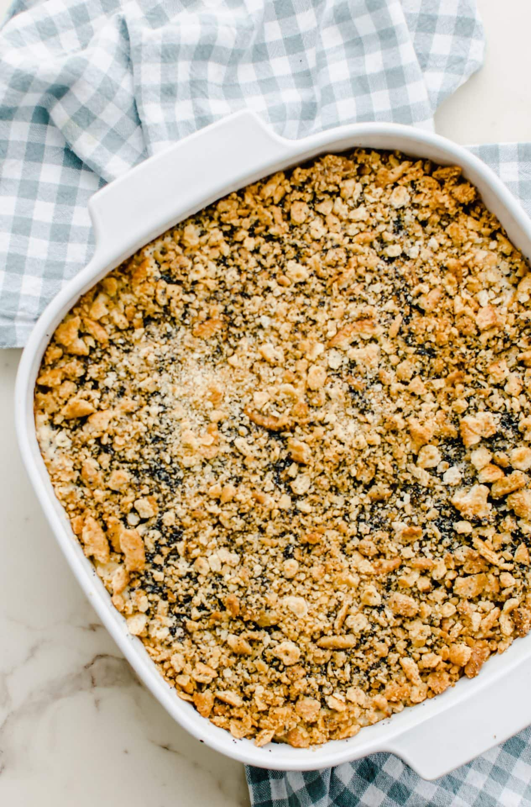

Nana's Poppyseed Chicken

A Crisp and Creamy Casserole
Ingredients
Ritz Crackers
Chicken
Pepper
Whatever's in the cream!
Steps
Acquire the ingredients.
Ask your nearest grandmother how to proceed from there.